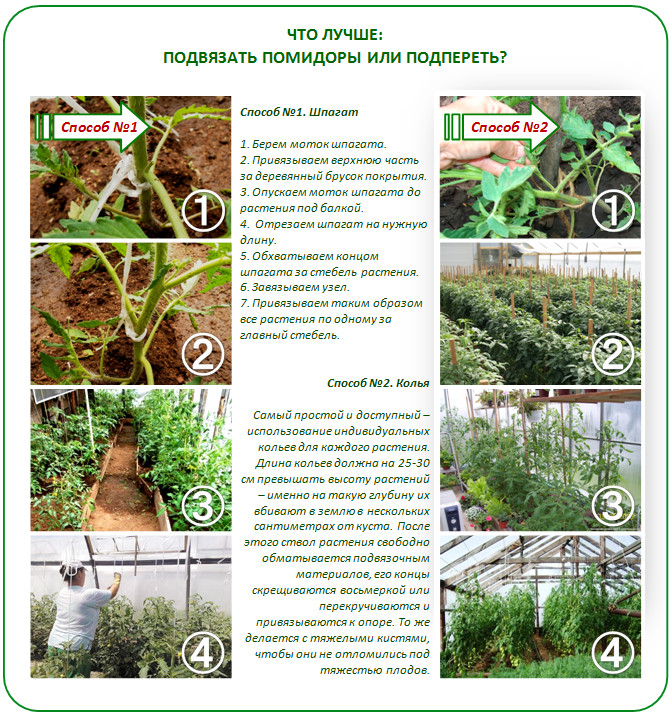

Где раздобыть качественные семена?
Первым делом разберитесь с существующими видами помидоров для поликарбонатных теплиц. Их действительно много, и от выбранного сорта или гибрида зависит не только ваш будущий урожай, но и то, насколько вы намучаетесь в борьбе со всевозможными болезнями и вредителями.
Как выбрать сорт?
В выборе вам поможет консультация грамотного продавца или подробная статья на нашем сайте. Главное, подберите тот сорт, который наиболее успешно выращивают именно в вашем регионе, предназначен именно для теплицы и не требует особых «танцев с бубнами», как любят говорить огородники. Существуют также сорта, которые соответствуют отдельным требованиям: с плодами нужной формы и цвета, определенной высотой кустов, обладанием засолочных или салатных качеств. И, наконец, обязательно посмотрите на дату изготовления семян и производство.
В основном сорта помидор различают как индетерминантные и детерминантные. Если все обобщить, то индетерминантные сорта хороши тем, что успевают завязать до шпалеры по 6-7 кистей, что сулит богатый урожай, а детерминантные выше 1 м не растут, а потому в теплице всегда будет достаточно и света, и воздуха.
Как самостоятельно заготовить семена?
Можно семена заготовить вручную, собрав их с предыдущего урожая. Так поступают многие, кому надоело приносить домой с рынка поддельную продукцию, которая потом даже не всходит. Сложного в этом деле ничего нет, только помните, что далеко не со всех плодов вообще можно оставлять семена. Например, с гибридов – на следующий год их потомство даст вам кривые и болезненные кусты с далеко не товарного вида плодами.
Но, если с выбранным сортом все в порядке, и вам очень понравился полученный урожай, тогда оставьте на семена самые красивые и ровные плоды. Брать желательно такие только с первых кистей – свои секреты природы. Но не срывайте их сразу – пусть вызреют максимально, но не допускайте также и переспевания. Затем соберите такие томаты, разложите в теплом и сухом месте, и дайте им дозреть еще две недели. От этого плоды станут мягкими, готовыми к сбору материала. Но, если в течение этих недель на каком-то из плодов вы обнаружите первые признаки гнили, сразу забирайте семена.
А вот как выглядит сам сбор: разрежьте помидор на две половины, затем ложкой аккуратно выньте семена. Т.к. они будут окутаны мякотью, промойте их под проточной водой, для чего удобнее разложить семена на сите. Затем расстелите пару газет и выложите свой улов так, чтобы он хорошо просох. Температура воздуха должна быть не менее 30°C, но берегите все этого прямых солнечных лучей.
Вот такие заботливо заготовленные семена можно хранить до 5 лет, но помните, что с каждым годом всхожесть будет немного ухудшаться. А для удобства сделайте небольшие бумажные конверты для хранения, на которых напишите сорт и год сбора.
Как вырастить здоровую и крепкую рассаду помидор?
Теперь готовим помидорные семена к выращиванию в теплице. Для этого их предварительно отбракуйте, поместив в 5% солевой раствор на 10 минут, убрав все всплывшие экземпляры. После этого промойте их и выложите на чистую бумажную салфетку, предварительно смоченную в воде. Поверх положите еще одну такую же, и оставьте на 20 часов в теплом месте. После этого посадочный материал полностью готов.
Помидорные семена готовить к выращиванию рассады нужно так:
- Шаг 1. Насыпаем субстрат в коробку и несколько раз встряхиваем ее. Таким способом добиваемся идеальной горизонтальной плоскости, по которой раскладываем семечки. Если вы их не обрабатывали – тогда с шагом не менее 1 см.
- Шаг 2. Далее делаем слабый раствор марганцовки, заливаем ее в распылитель и опрыскиваем семена. Так они со своего места не сдвинутся, даже немного придавятся.
- Шаг 3. Засыпаем все слоем земли в 1 см, снова опрыскиваем. Вкладываем коробку в пакет и помещаем в теплое место, около 25°С.
Теперь семенам обеспечены самые лучшие условия для прорастания. Остается только проверять семена каждые три дня, проветривая их и опрыскивая водой. Как только заметите первые петельки – забирайте для высадки, иначе можно опоздать. Единственное, на что обязательно нужно обратить внимание – это «шапочки» от кожицы семян, которые могут помешать раскрыться листочкам. Смочите их водой или аккуратно снимите руками.
Как только раскроются семядоли, снижайте температуру и переставляйте рассаду в более светлое место. А как только появится первая пара настоящих листочков, приступайте к пикировке.
В качестве тары под рассаду помидор подходит почти все, что у вас окажется под рукой: пластмассовые бутылки, ведерки из-под майонеза, пакеты и коробки. Но особенно удобны пластиковые стаканы: при посадке в теплицу просто разрезаем их по бокам, и извлекаем растение с сохраненными в плотной земле корнями. Важно только сделать в таких стаканчиках дренажные отверстия – хотя бы тем же шилом, раскаленным на огне.
Есть всего лишь одна сложность выращивания рассады в стаканах и ящиках – грунт в них быстро пересыхает и трескается ввиду своего небольшого объема. Но вместо бесконечного рыхления и опрыскивания используйте остатки гранулированного выпитого чая (не листового, чтобы не завести плесень). Такое необычное мульчирование позволит куда лучше сохранить влагу и создать более ровную поверхность, которая для растений полезнее. Тоже самое касается и кофейной гущи несладкого напитка.
Грунт для рассады можно использовать самый обычный, с огорода, добавив только перегноя на треть. В такой земле потом будет легко извлекать нежные ростки, чтобы не травмировать корни. Но дальше для тепличных помидоров уже нужна более плотная почва.
При выращивании рассады помидоров на дно тары положите измельченную яичную скорлупу, которая послужит и дренажем, и кальциевой подкормкой. Для томатов удлиненной формы, которые подвержены вершинной гнили, это особенно важно.
А важно, чтобы высаженной рассаде в теплице было хорошо. Вот один из самых удачных проектов тепличных грядок под эту культуру:
Высаживаем помидоры в тепличные грядки
Подготовив почву для высадки томатов, сделайте лунки глубиной 20-25 см. Расстояние между лунками оставьте в пределах 70-90 см, а в рядах высаживайте растения на расстоянии 30-50 см.
Если вы хорошо удобрили грядки для будущих помидоров, то летом не должно возникнуть проблемы с питательными веществами. Единственное, что может помешать, это заболевания корня и стебля, которые не дадут брать из земли все необходимое. В этом случае потом перейдете на некорневые подкормки, каждую неделю опрыскивая растения раствором «Фертика Люкс», взяв 10 г удобрения на 10 литров воды.
Ну вот наконец и пришло время высадки томатов. Почва готова, температура воздуха и земли в норме, весна в полном разгаре – пора нести в теплицу рассаду. А дальше все проще:
- Заносим ящики с рассадой и поливаем.
- Набираем одной рукой из ямки мокрую землю, второй усаживаем растение, а мокрой почвой закрываем корни.
- Засыпаем ямку сухой землей, максимально выравниваем и немного уплотняем.
- Подвязываем рассаду, подвесив к перекладинам крючки с намотанной веревкой. Саму веревку привяжите к стеблю как можно ниже. Оставьте немного запас, чтобы потяжелевшие помидоры потом не натянули крепление.
К слову, подвязывать помидоры в теплице также можно по-разному:
Высаживайте рассаду помидор только по окончанию ночных заморозков, и лучше в пасмурную погоду. За ночь такая рассада успеет хорошо закрепиться на новом месте.
Но немного по-другому томаты высаживают в модные геодезические теплицы:
«Помидорный» микроклимат в закрытом грунте
Итак, давайте разберемся, какие условия необходимо создать в теплице для успешного выращивания помидоров.
Освещенность
Помидоры достаточно светолюбивы, и прекрасно себя чувствуют при длинном световом дне. Но важно не переборщить с подсветкой для рассады: при избытке количество листьев между соцветиями увеличится значительно, но плоды не завяжутся.
Температура
Самая благоприятная температура для роста и плодоношения у томатов – 22-25°С днем, а ночью – 16-18°С. И здесь есть опасность остаться и вовсе без урожая: если температура воздуха в теплице поднимется выше 29°С, пыльца станет полностью стерильной, и цветы осыплются. Никаких плодов, конечно, уже не будет. Хотя при этом же, непродолжительное ночное похолодание до 3°С помидоры способны переносить стойко.
Влажность
Оптимальная влажность воздуха для этой культуры – до 60%. При большей влажности плоды быстро растрескиваются.
К слову, сегодня модно выращивать помидоры в горшках:
Тонкости полива помидоров в поликарбонатной теплице
Вода томатам необходима, чтобы плоды «наливались», а потому особенное внимание этому моменту нужно уделить тогда, когда на кустах образовываются бутоны и завязи. Но высокую влажность воздуха и близкое расположение грунтовых вод эта культура не переносит, довольно быстро заболевая фитофторозом и бурой пятнистостью.
В общей сложности в поливе тепличных томатов ориентируйтесь на такой график:
- С апреля по начало июня поливаем раз в 3 дня, по 3 литра в теплые дни и по 2 литра в прохладные.
- С начала июня по начало июля поливаем раз в 3 дня по 3 литра.
- С июля по начало августа – раз в 4-5 дней по 3 литра.
- С августа по сентябрь – раз в 5-6 дней по 3 литра.
Вводите воду двумя порциями, по 1,5 литра – утром и вечером, примерно в 7.00 и 16.00.